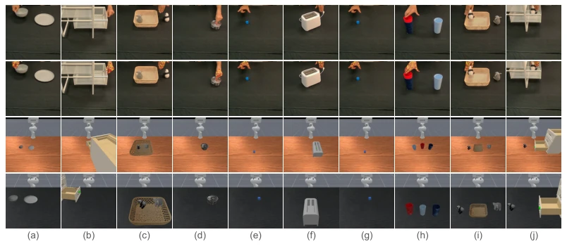
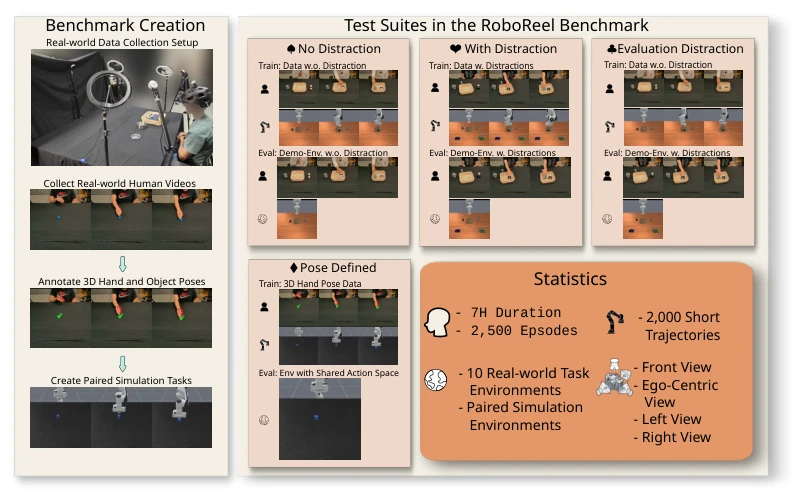
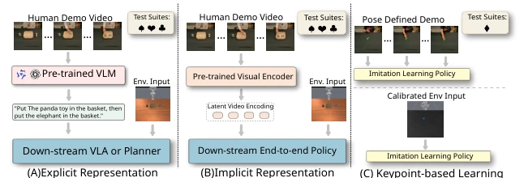
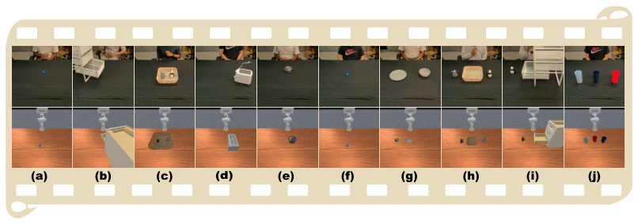
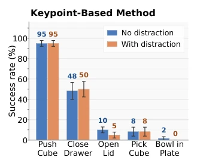
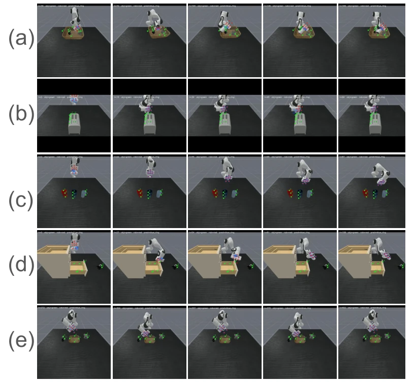
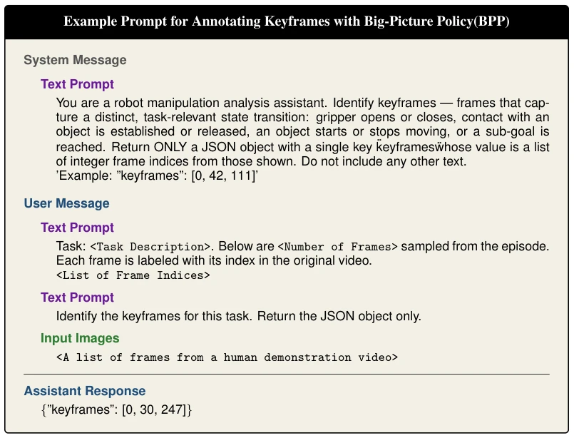
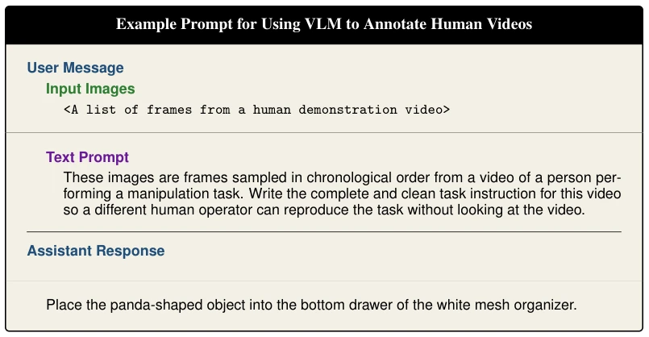
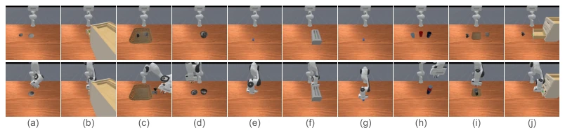
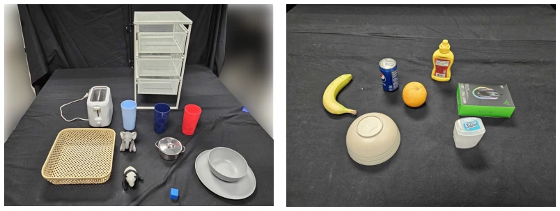

这篇论文终于给 LfO 领域来了个“公平竞技场”。RoboReel 最大的贡献在于把真实人类视频和仿真环境配对，解决了以往 benchmark 里“苹果比橘子”的尴尬。不过，别高兴太早，实验结果挺扎心：虽然 VLA 模型（如π0.5）在多数任务上碾压其他方法，但在长视界和精细操作（如叠杯子、按烤面包机）上依然集体翻车。更讽刺的是，引入关键点的 Pose Defined 方法虽然抗干扰强，但一碰到抓取就原形毕露。这 benchmark 确实统一了标准，但也暴露了当前 SOTA 在泛化性和精细控制上的硬伤，尤其是单臂限制和缺乏软体物体，感觉离真正“像人一样学”还有距离。
This paper finally brings a "fair playing field" to the LfO field. RoboReel's greatest contribution lies in pairing real human videos with simulation environments, resolving the awkwardness of "comparing apples to oranges" in previous benchmarks. However, do not celebrate too early; the experimental results are quite disappointing: although VLA models (such as π0.5) significantly outperform other methods on most tasks, they still collectively fail on long-horizon and fine manipulation (such as stacking cups, pressing a toaster). More ironically, Pose Defined methods incorporating keypoints, while robust to interference, fail completely when encountering grasping. This benchmark indeed unifies standards, but also exposes the inherent flaws of current SOTA in generalization and fine control, especially single-arm restrictions and lack of soft objects, suggesting a distance from truly "learning like humans".
Existing LfO research lacks a unified benchmark, leading to an inability to compare methods horizontally. RH20T [27] has real videos but lacks simulation evaluation environments, MimicDroid [26] has simulation environments but lacks real human demonstrations, and Human2Robot [9] similarly lacks paired evaluation environments. This makes it difficult to quantify field progress, unable to judge whether it is algorithmic progress or data dividends. Furthermore, existing works have varying assumptions; some rely on language instructions [14, 15], some on implicit representations [16, 21], and some on keypoints [23], lacking opportunities to test the effectiveness of different representation choices under the same tasks and visual conditions. RoboReel aims to fill this gap, providing paired data and calibrated environments to achieve fair evaluation.

Figure 9: From top to bottom are frames from original human videos, human videos with keypoint annotations, non-calibrated task environment, and calibrated evaluation environments for each task – (a) place a bowl in a plate, (b) close drawer, (c) empty basket, (d) open a lid, (e) pick a cube,(f) press a toaster button, (g)push cube, (h) stack three cups, (i) place toys in a basket, (j) place a toy in a drawer and close the drawer.
RoboReel adopts a "Real Capture + Digital Twin" framework. First, a calibrated desktop environment is built in the lab, collecting real human demonstration videos for 10 tasks (2000 clips, including interference objects), covering multiple viewpoints. Second, object meshes are reconstructed using SAM3D-objects [54], and a digital twin simulation environment is built in ManiSkill [44] to ensure visual consistency. Finally, four test suites are designed: No Disturbance (ND), With Disturbance (WD), Evaluate Disturbance (ED), and Pose Defined (PD). During the training phase, real videos are paired with simulation trajectories; during the evaluation phase, robustness is tested by changing interference object distributions. The keypoints suite utilizes calibrated cameras to obtain 3D hand poses for imitation learning. The entire process emphasizes strict alignment between training and testing environments to eliminate evaluation bias caused by domain differences. Among them, the ED suite specifically tests generalization ability with no interference during training and interference during testing, which is often ignored by existing works. The simulation environment adopts ManiSkill [44] to support GPU-accelerated rendering, ensuring training efficiency.

Figure 1: Overview – RoboReel consists of real-world data collected by six participants using a calibrated, tabletop setup across ten distinct tasks with over seven hours of data. To facilitate equi- table lateral comparisons of multiple Learning from Observation (LfO) algorithms, we constructed a paired digital-twin simulation environment featuring identical objects with matching textures and colors. The benchmark features four distinct test suites: three evaluate the capability to train on human observations (with or without distractors) and test across varied distraction settings; and the fourth suite offers a calibrated evaluation for feature-extraction-based LfO approaches. Ro- boReel spans the full breadth of current LfO challenges while introducing aspirational suites for long-horiz

Figure 3: We categorize the baseline models we take into consideration by their representational choices to process human demonstration videos. Methods in (A) explicitly generate language in- structions with VLMs given videos, and then use a downstream planner or VLA model to generate robot actions. Methods in (B) encode the human demonstrations into a learned latent space which is then used to guide a downstream neural network policy. Models in (C) directly perform imitation learning using human videos and their paired 3D hand poses in training, and directly rollout on an environment that has the same 3D action space in real world.
7 SOTA models were evaluated, including SeeDo [14], Vid2Robot [16], UniSkill [21], and π0.5 variants. The metric is task success rate. Results show that the video-conditioned π0.5 model performs optimally in ND and WD suites, especially outperforming explicit language methods on long-horizon tasks. However, in the ED suite, keyframe sampling strategies significantly outperform uniform sampling. The keypoints method PointPolicy [23] performs well on tasks such as pushing cubes, but has a high failure rate on grasping tasks. Core findings: Long-horizon tasks remain a bottleneck, low-tolerance operations (such as pressing buttons) are greatly affected by interference, and although current VLA is strong, it has not yet solved the fine manipulation problem. For example, stacking cups task success rates are generally below 25%, indicating that models struggle to handle multi-step sequence error accumulation.

Figure 2: Tasks in the RoboReel Benchmark – (a) push cube, (b) close drawer, (c) empty basket, (d) press a toaster button, (e) open a lid, (f) pick a cube, (g) place a bowl in a plate, (h) place toys in a basket, (i) place a toy in a drawer and close the drawer, (j) stack three cups. These tasks vary in their horizon, types object interactions, and required tolerances during manipulation.

Figure 4: This figure presents the ex- periment results of PointPolicy on the keypoint-based test suite (♢) on five tasks. A different individual model is trained for each task.
其他图片Other Figures

Figure 5: Qualitative rollouts for the extended tasks: (a) empty basket, (b) press a toaster button, (c) stack three cups, (d) place a toy in a drawer and close the drawer, and (e) place toys in a basket. In all tasks the policy follows the overall trajectory, moving toward the cups, toys, or button, but fails to execute the precise manipulation required to press the button or grasp the target object.

Figure 6: Example prompt for generating keyframe annotations using the VLM-based keyframe annotation framework. This framework is inspired by BPP, and we use GPT-5.4-mini to as the backbone VLM. The downstream video-conditioned π0.5 VLA policy select frames from the videos using these keyframe annotations.

Figure 7: Example prompt for using VLM to generate language annotation for human demonstration videos. The generated language instructions are consumed by the downstream π0.5 VLA policy.

Figure 8: Examples of start and end configurations of a successful instance in the non-calibrated evaluation environment for each task– (a) place a bowl in a plate, (b) close drawer, (c) empty basket, (d) open a lid, (e) pick a cube,(f) press a toaster button, (g)push cube, (h) stack three cups, (i) place toys in a basket, (j) place a toy in a drawer and close the drawer. The top half of this figure shows the initial states and the bottom half shows the end states.

Figure 10: This figure shows the real-world objects we use. (a) The image of all the task relevant objects, including a toaster, a basket, a white drawer, three cups of different colors, an elephant soft toy, a pot and its lid, a panda soft toy, a blue cube, a gray bowl, and a gray plate. (b) The image of the real-world distraction objects, including a banana, a can of coke, a flipped bowl, an orange, yellow mustard, a mouse box, and a chewing gum box.